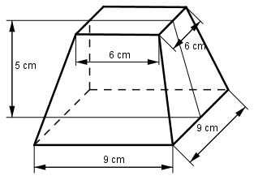

Aufgabe 250 Wie groß sind das Volumen V und die Oberfläche O des dargestellten Körpers?

Pyramidenstumpf: 9 cm - 6 cm AB = ------------- = 1,5 cm 2 Satz von Pythagoras im Dreieck ABC: BC² = AB² + AC² = = 1,5² cm² + 5² cm² = 27,25 cm² |√ BC = 5,2 cm h = 5 cm h V = --- * (G1 + + G2) 3 5 V = --- * (9² + + 6²) cm³ 3 5 V = --- * (81 + 9 * 6 + 36) cm³ 3 V = 285 cm³ O = Quadrat 1 + Quadrat 2 + 4 * Trapez O = 9 cm * 9 cm + 6 cm * 6 cm + 4 * 9 cm + 6 cm * ------------- * 5,2 cm 2 O = 81 cm² + 36 cm² + 156 cm² = 273 cm²